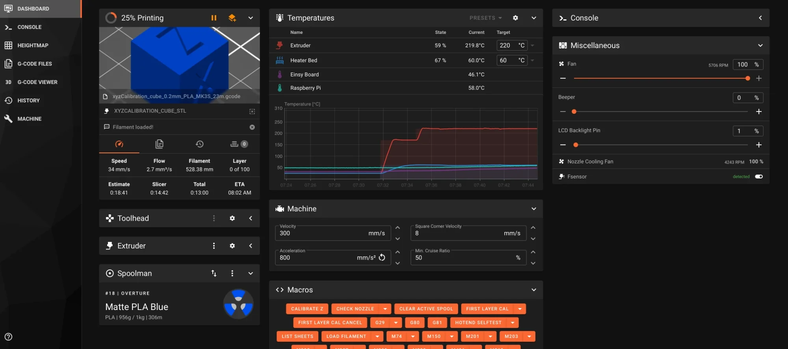
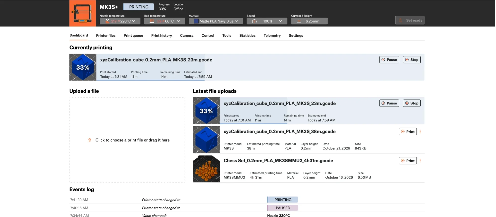

A calibration cube, live
Temperatures, progress, time left and the loaded spool come from Klipper and Moonraker. Pause, stop and set temperatures from Connect, and Klipper does it.


- Nozzle 220 °C
- Bed 60 °C
- Same file and progress
- Pause and stop
- PLA from Spoolman